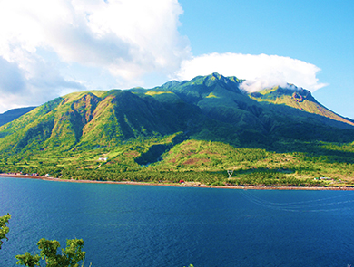
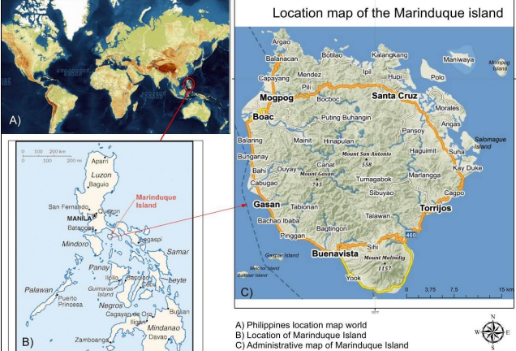
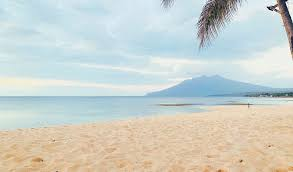
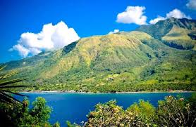
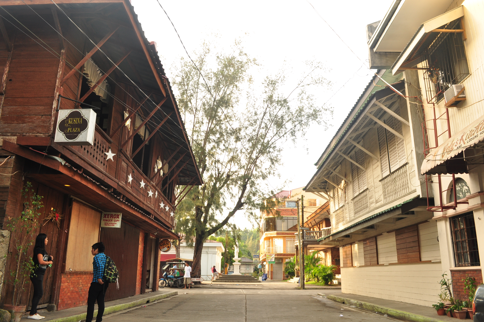
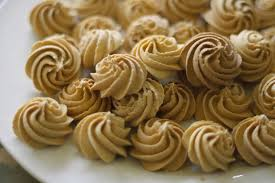

Discover Marinduque
Marinduque is more than just a heart-shaped island on a map. It is the Geodetic Center of the Philippines—the very point where all modern Philippine maps are measured from. But beyond geography, it is the home of the world-renowned Moriones Festival and a culture of hospitality that crowns every visitor as royalty.

Marinduque IslandHighlights
- Moriones Festival: Experience the vibrant and colorful Moriones Festival, a week-long celebration during Holy Week that features locals dressed in Roman soldier costumes.
- Beautiful Beaches: Relax on the pristine beaches of Marinduque, such as Poctoy Beach and Santa Cruz Beach, known for their crystal-clear waters and white sand.
- Historical Sites: Explore historical landmarks like the Boac Cathedral and the Marinduque Museum to learn about the island's rich history and culture.
- Natural Wonders: Discover natural attractions like Bathala Cave, Malbog Sulfur Spring, and the enchanting Tres Reyes Islands.
History and Origin

Marinduque Legend
The legend of Marinduque tells the tragic love story of Princess Maring and a humble man named Duque. Forbidden to marry by her father, the lovers drowned to be together, and it is said the island was formed from their union and named by combining their names: Maring and Duque.

Marinduque Geography and Climate
Marinduque is located in the MIMAROPA region of the Philippines and is known for its heart-shaped geography. The island has a tropical climate, with a wet season from June to November and a dry season from December to May, making it an ideal destination year-round.
Marinduque Municipal
Marinduque is divided into six municipalities: Boac, Mogpog, Gasan, Santa Cruz, Torrijos, and Buenavista. Each municipality offers unique attractions and cultural experiences, from historical sites to natural wonders.
Culture and Festivals

Moriones Festival
The Moriones Festival is a vibrant, week-long Lenten celebration on Marinduque island, Philippines, held annually during Holy Week. Participants don, elaborate Roman soldier costumes and painted masks (morions) to reenact the search for Longinus, the blind centurion who regained sight after piercing Jesus’ side.

Marinduque Masks
Marinduque's Morion (or Moryon) masks are intricately carved wooden helmets worn during the annual Moriones Festival (Holy Week). As a central piece of local cultural heritage and panata (devotion), these masks traditionally feature scowling, bearded, or Caucasian-like facial expressions, symbolizing the Roman soldiers searching for Longinus.

Putong Festival
The tubong or putong, is a ceremony indigenous to the island of Marinduque, Philippines. Literally, the word “putong” means to crown, is a song of thanksgiving, hope and prayer for a long, blessed life. According to beliefs, the patron saint rejoices at this kind of celebrations and intercedes for the honoree in his wish for long life, happiness and safety from accidents and bad luck. Commonly performed to welcome guests and to wish them good life, health and luck. It is also done during birthdays, anniversaries, graduations or any special events that a person is thankful of and praying for a blessed path in life.

Festival Calendar
Marinduque's festival calendar is highlighted by the world-renowned Moriones Festival held annually during Holy Week (March/April), where masked participants reenact the story of Longinus. Other significant cultural events include the Maalindog–Tubaan Festival (January), Anibina (March), and the Bila-Bila Festival (December), celebrating local heritage and agriculture.
Natural Wonders & Beaches

Maniyawa Beach
Maniyawa Beach is a pristine coastal destination in Marinduque, known for its crystal-clear waters and stunning natural beauty. It offers visitors a chance to relax and enjoy the serene environment while experiencing the local culture.

Poctoy Beach
Poctoy Beach is a beautiful coastal destination in Marinduque, known for its pristine sands and clear waters. It offers visitors a chance to enjoy the natural beauty and tranquility of the island.

Tres Reyes Islands
Tres Reyes Islands is a group of small, uninhabited islands located off the coast of Marinduque, known for their pristine beaches and rich marine biodiversity. The islands offer a unique opportunity for snorkeling, diving, and exploring untouched natural landscapes.

Cave Explorations
Cave Explorations in Marinduque offer a unique opportunity to discover the island's underground wonders, including the famous Bathala Caves and the adventurous Bagumbungan Cave.

Mount Malindig & Malbog
Mountain Explorations in Marinduque offer a unique opportunity to discover the island's natural beauty, including the famous Mount Malindig and the scenic Malbog area.
Heritage & Landmarks

Boac Cathedral
The Boac Cathedral is a historic landmark in Marinduque, known for its beautiful architecture and cultural significance. It serves as a testament to the island's rich history and religious heritage.

Ancestral Houses
Heritage Houses in Marinduque are a testament to the island's rich cultural history, showcasing traditional Filipino architecture and lifestyle.

Luzon Datum
The Luzon Datum of 1911 is the historical geodetic origin for all surveys and mapping in the Philippines, established by the US Coast and Geodetic Survey on Mataas na Bundok in Marinduque. Known as Station Balanacan, it was used to standardize maps nationwide using the Clarke Spheroid of 1866. It was replaced by PRS92

National Museum
The National Museum of the Philippines – Marinduque (NMP – Marinduque) features the rich heritage of the Southern Tagalog islands of Marinduque and Romblon, including their role in early maritime trade, its rich natural resources, religious traditions like Moryonan, among others.

Butterfly Capital
Marinduque is celebrated as the "Butterfly Capital of the Philippines," supplying approximately 85% of the country's butterfly and pupae exports. Located in the MIMAROPA region, the island hosts over 300 to 600 species of butterflies and features specialized butterfly breeding farms in areas like Cawit, Tugos, and Duyay.
Foods

Arrowroot Cookies
Marinduque is renowned as the "Arrowroot King" of the Philippines, producing iconic, powdery, flower-shaped uraro cookies made from organic arrowroot flour. These gluten-free, melt-in-your-mouth delicacies, along with native sweets like panganan, are staple pasalubong (souvenirs) showcasing the island's rich agricultural heritage.

Manakla & Exotic Eats
Marinduque, known as the heart of the Philippines, offers unique local cuisine featuring freshwater crustaceans and distinct, native delicacies.

Coconut Trail – Tuba, Patis, and Miki
The Coconut Trail, particularly in regions like the Visayas, Mindanao, and parts of Southern Luzon, refers to the traditional, cultural, and culinary journey surrounding the coconut palm. It focuses on harvesting Tuba (coconut wine), processing coconut products, and utilizing the tree for food and livelihoods.